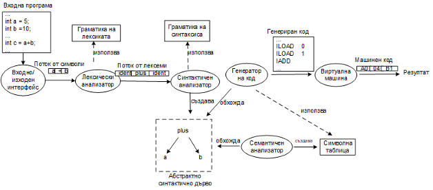

Учебният език STUDENT и неговият компилатор
STUDENT е процедурно-ориентиран, силно типизиран учебен език, синтактично подобен на C и Java.
Целта на курса: постепенно да разберем и реализираме модулите на
компилатор, който превежда STUDENT програми до инструкции за виртуална стекова
машина.
Обща организация на учебния компилатор

Модулна структура
| Модул | Получава | Създава / извършва |
|---|---|---|
| Входно-изходен интерфейс | Текст на входната програма | Поток от символи |
| Лексически анализатор (Lexer) | Поток от символи | Премахва незначещите символи и създава поток от лексеми |
| Синтактичен анализатор (Parser) | Поток от лексеми | Разпознава валидно изречение на входния език и формира абстрактно синтактично дърво (AST) |
| Семантичен анализатор | Абстрактно синтактично дърво (AST) | Проверява областите на видимост и съвместимостта на типовете и формира символна таблица |
| Генератор на код | Абстрактно синтактично дърво (AST) и символна таблица | Генерира код за виртуалната стекова машина |
| Интерпретатор за виртуална машина | Инструкции за виртуалната машина | Изпълнява инструкциите и генерира резултат |
Карта за целия семестър
По-късно ще научиш защо регулярните изрази и крайните автомати са свързани с лексическия анализ, стековите автомати и граматиките — със синтактичния анализ, а типовете и областите на видимост — със семантичния анализ.
Изпитен акцент: изисква се да свързваш техниките със съответните фази —
например регулярен израз → лексически анализ. На този етап е достатъчно да знаеш
отговорността на отделните фази.